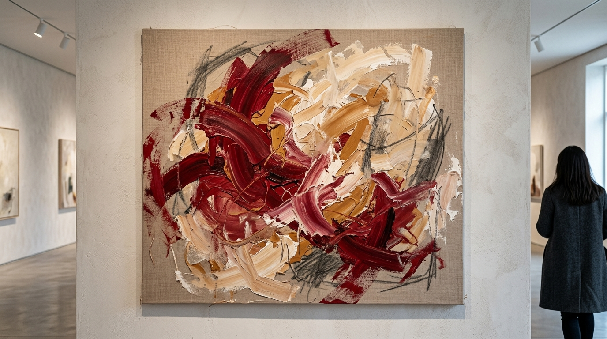
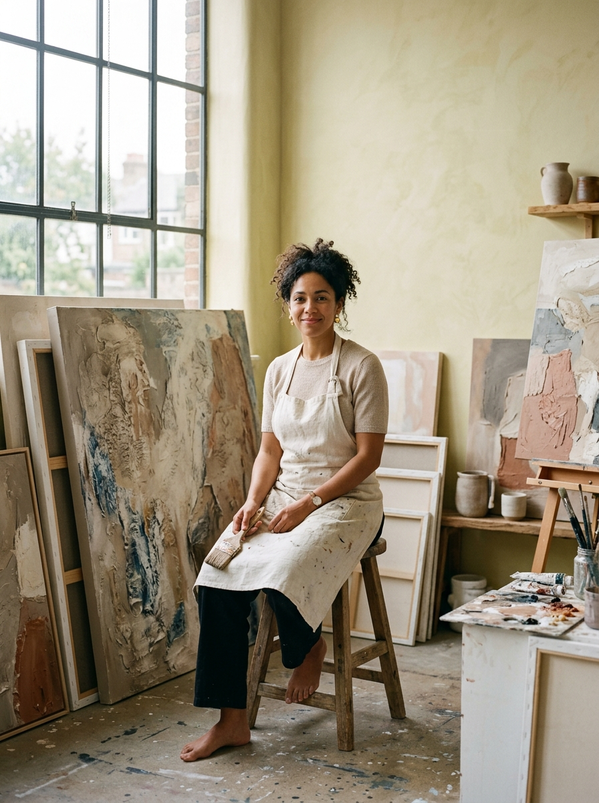

Как выглядит
ваша любовь?
За один вечер переведите свои эмоции в цвет, линии и форму — и создайте собственную абстрактную картину с нуля.
Без опыта. Без копирования чужих работ. Только ваше состояние и ваша картина.

Не урок рисования. Практика через живопись.
В чём разница
На обычном мастер-классе вам показывают картину и предлагают повторить её.
Здесь всё наоборот.
У вас не будет образца, который нужно скопировать. Отправной точкой станет тема любви и ваши собственные эмоции, воспоминания и ощущения.
Мы немного познакомим вас с языком абстрактной живописи, а дальше вы будете искать собственный способ выразить то, что чувствуете.
В итоге у каждого получится совершенно своя работа.
Глубина оттенка, контраст и эмоциональный вес
Напряжение, мягкость, импульс и траектория
Пространство, баланс и силуэт переживания
Динамика мазка, жест кисти и спонтанность
Плотность пасты, рельеф, наслоение и тактильность
Эмоция — отправная точка.Абстракция — язык.Картина — результат.
«Любовь может быть спокойной или болезненной. Яркой или тихой. Про человека, воспоминание, близость, свободу, себя или жизнь.»
Здесь нет задачи найти «правильный» ответ или создать работу под чей-то чужой вкус.
Есть задача остановиться, почувствовать своё состояние и попробовать выразить его на холсте.
Что будет за эти 3 часа
Знакомство
Небольшая группа до 10 человек. Знакомимся, осваиваемся в пространстве, настраиваемся на работу.
Немного об абстрактной живописи
Коротко разберём, как художник может говорить без конкретных предметов и сюжетов — с помощью цвета, линии, пятна, ритма и формы.
Работа с темой любви
Попробуем понять, какой эта тема ощущается именно для вас. Какие цвета с ней связаны? Какое движение? Какая энергия?
Картина
Большую часть вечера вы рисуете. Ведущий помогает с материалами, композицией и техникой, но не говорит, что именно вы должны изобразить.
Финал
У каждого останется собственная законченная работа. Кто захочет — сможет рассказать о ней и обсудить результат с группой.
Если вы никогда не рисовали — это абсолютно нормально
Для участия не нужны художественное образование, знание анатомии, чувство перспективы или умение рисовать людей и предметы.
Мы работаем с абстракцией.
Это значит, что вашими инструментами становятся простые и честные вещи:
Нужно сделать её своей.
С чем вы уйдёте
Своя картина
Одна законченная абстрактная работа, созданная вами с нуля. На качественном холсте на подрамнике, готовая занять место в вашем интерьере.
Новый опыт
Возможность попробовать живопись без необходимости становиться профессиональным художником или годами учиться академической базе.
Эмоциональная разгрузка
Несколько часов, когда не нужно решать рабочие задачи, смотреть в телефон и куда-то спешить. Можно полностью переключиться на себя, свои ощущения и процесс.
Фотографии
Эстетичные фотографии с практикума, процесса работы в студии и вашей готовой картины в студийном свете.
Иногда чувство проще нарисовать,
чем объяснить словами
Мы много думаем, анализируем, сомневаемся и бесконечно пытаемся подобрать правильные слова.
На этом вечере можно сделать наоборот.
А взять краски и посмотреть, что произойдёт,
если просто дать эмоции материальную форму.
Приходите, если вам хочется:
попробовать что-то совершенно новое;
провести вечер не в ресторане или кино;
переключиться от работы и повседневных задач;
снова сделать что-то руками;
выразить эмоции без долгих разговоров;
узнать немного больше об абстрактном искусстве;
создать вещь, которую можно забрать домой;
просто провести несколько часов красиво и с удовольствием.

Ведущая практикума —
Анна Романова
Художник и преподаватель, работающий с абстрактной живописью.
«В абстрактной живописи нет ошибок — есть поиск искренности между рукой, краской и вашим чувством.»
Всё необходимое уже будет ждать вас
Никаких скрытых доплат. Вам не нужно заезжать в художественный магазин или что-то докупать.
Холст на подрамнике
Качественный хлопковый/льняной холст (50×60 см) с профессиональной грунтовкой.
Краски и все расходные материалы
Художественный акрил, пигменты, структурные текстурные пасты, кисти, мастихины, палитры, фартуки.
Работа и кураторство ведущего
Индивидуальное сопровождение, помощь с композицией, колористикой и техникой на каждом этапе.
Атмосферное пространство
Светлая камерная студия в историческом центре с профессиональным светом и правильной акустикой.
Напитки и угощения
Вино, кофе, коллекционный чай и легкие закуски для непринужденного и комфортного вечера.
Фотографии с практикума
Репортажные кадры процесса и эстетичные портреты с вашей готовой работой в студийном интерьере.
Просто приходите в удобной одежде и в том настроении, в котором вы сейчас есть.
Практическая информация
18:30 – 21:30 (сбор гостей за 15 мин)
Свободный темп без спешки
Осталось 3 свободных мест
Берсеневская наб., 6с3 (Красный Октябрь)
Вопросы и ответы
Всё, что важно знать перед бронированием места
Да. Практикум изначально рассчитан в том числе на людей без художественного опыта. Вам не придётся рисовать реалистичные предметы или повторять работу преподавателя.
Как выглядит любовь
именно у вас?
Можно ещё раз попробовать ответить словами.
А можно один вечер посвятить тому, чтобы увидеть её на холсте.